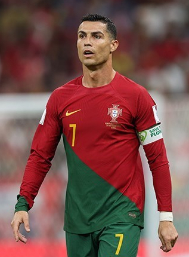

Christiano Ronaldo

Cristiano Ronaldo, the Portuguese football icon, is hailed as one of the most exceptional players in modern football. With lightning speed, astonishing agility, and deadly precision, Ronaldo has thrilled fans around the world with his goal-scoring exploits. Throughout his career, he has demonstrated a relentless drive for success, coupled with unmatched physical prowess. Ronaldo first gained prominence at Manchester United, where he played an integral role in winning numerous league titles and the prestigious UEFA Champions League. His move to Real Madrid in 2009 further solidified his status as a footballing legend, as he shattered records and propelled the club to unprecedented heights. Ronaldo's incredible athleticism, combined with his ferocious shooting ability, has resulted in countless remarkable goals and memorable moments on the field. Internationally, he has been a talisman for the Portuguese national team, leading them to victory in the UEFA European Championship and the UEFA Nations League. Beyond his remarkable football career, Ronaldo is also known for his philanthropy, contributing to numerous charitable causes. With his unmatched skill, achievements, and dedication, Cristiano Ronaldo continues to inspire and etch his name as one of the all-time greats in the history of the sport.